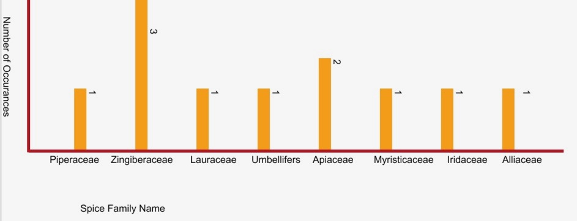
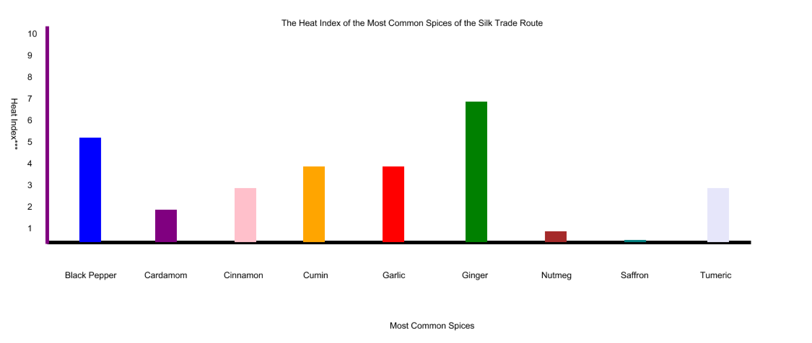

Analysis
This website was created to expand upon and explore the knowledge of historic recipes
used in the spice trade, as well as the most common spices used in those recipes.
The spices:
- Black Pepper
- Cardamom
- Cinnamon
- Cilantro
- Cumin
- Garlic
- Ginger
- Nutmeg
- Onion
- Saffron
- Tumeric
Each of these spices were broken down by their genus species, family, origin, and
cultivation followed along with a brief description of why they are used and how they
are used. Included in our findings is that these spices have family types in
common.
Three spices belong in the Zingiberaceae family:
Two spices belong to the Apiaceae family:
Then, the rest of the eleven spices belong to families of their own. This is interesting
because, it represents the correlation between family of spice and the commonality
within them. Taking a look at the SVG graph below we can see this in a simpler form:

As you can see from the graph, Zingiberaceae is the family with the most shared spices. Following that, Apiaceae is the second most shared family among the spices. The remaining six spices each have their own family.
As well as the number of family occurrences, we can also see that the spices differ in
heat level using a heat index. We can see that the heat index goes from zero (being the least spicy) to ten (being the
spiciest).
With that being said, in spices are ordered as follows:
- Ginger
- Black Pepper
- Garlic & Cumin
- Cinnamon & Tumeric
- Cardamom
- Nutmeg
- Saffron
This represents each indivdual spice's heat wich also reflects to their location in the
world and with which dishes they are used in.

Based on the graph above, we found that the hottest spice was Ginger while the least hottest spice was Saffron. Since ginger's origin is Tropical China and saffron's origin is the Near East, most likely Asia Minor, the heat index would have greatly influenced the flavors of recipes in these areas.
Along with this data, we have also found that some of these eleven spices have similar
origins. For example:
Both have origins in the Himilayas as well as Siberia.